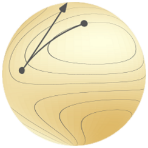
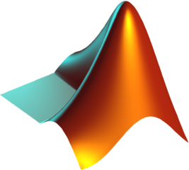
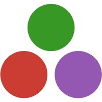

Welcome to Manopt!
Toolboxes for optimization on manifolds and matrices
Optimization on manifolds is a powerful paradigm to address nonlinear optimization problems.
With Manopt, it is easy to deal with various types of constraints and symmetries which arise naturally in applications, such as orthonormality, low rank, positivity and invariance under group actions.
These tools are also perfectly suited for unconstrained optimization with vectors and matrices.
Matlab 
This website is the home of the Matlab version of Manopt. Check out the tutorial, our downloads and, for the most up-to-date code, our GitHub repository.
Python 
The PyManopt website houses the Python version of Manopt and its documentation. Also check out the GitHub repository.
Julia 
The Manopt.jl website hosts the Julia version of Manopt and its documentation. Also check out the GitHub repository for Manopt.jl and the sister project Manifolds.jl.
Manifolds and matrices
Manifolds are mathematical sets with a smooth geometry, such as spheres. If you are facing a possibly non-convex optimization problem with nice-looking constraints, symmetries or invariance properties, Manopt may just be the tool for you. Check out the manifolds library to find out! Moreover, since linear spaces are manifolds, Manopt is especially convenient for optimization over matrices.
Resources
Manopt comes with a large library of manifolds and ready-to-use Riemannian optimization algorithms. It is well documented and includes diagnostics tools to help you get started quickly with barely any prerequisites in optimization and geometry. Feel free to ask questions on the forum. To learn more about the mathematical foundations, see the two books and other resources linked on the about page.
It's open source
Let us know how you use Manopt, and tell us about bugs or missing features by opening issues on our GitHub pages. Please cite the toolbox according to the language you use: Matlab, Python, Julia (click for BibTex).